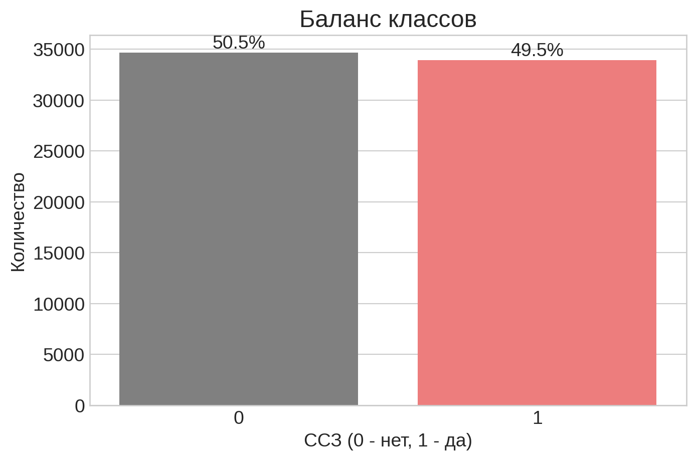
(поиск инсайтов, составление рекомендаций стейкхолдерам)
Проблема:
Сердечно-сосудистые заболевания (ССЗ) — основная причина смертности. Раннее выявление рисков критически важно.
Цель исследования:
Анализ факторов риска и построение ML-моделей для оценки вероятности заболевания.
Задачи: 1. Исследовательский анализ данных (EDA). 2. Очистка от выбросов и аномалий. 3. Разработка предиктивных моделей. 4. Формирование бизнес-рекомендаций.
Ключевые выгодоприобретатели результатов исследования:
🏥 Медицинские учреждения - Оптимизация скрининга - Снижение нагрузки на врачей - Точность диагностики
👨⚕️ Врачи - Поддержка принятия решений - Приоритизация пациентов
👤 Пациенты - Персонализированные рекомендации - Раннее предупреждение
📉 Страховые компании - Оценка рисков - Превентивная медицина
Источник: Cardiovascular Disease Dataset
Объем: 70 000 записей
Антропометрия: - age (возраст) - gender (пол) - height (рост) - weight (вес)
Образ жизни: - smoke (курение) - alco (алкоголь) - active (спорт)
Медицинские показатели: - ap_hi, ap_lo (давление) - cholesterol (холестерин) - gluc (глюкоза)
Целевая переменная: - cardio (наличие ССЗ)
В исходных данных обнаружены выбросы (ошибки ввода): - Нереалистичное давление (напр. -150) - Аномальный рост/вес
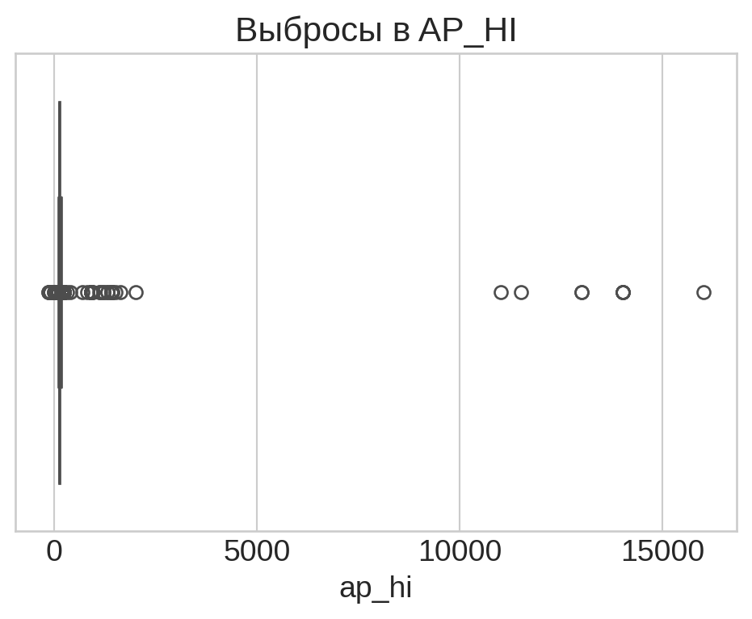
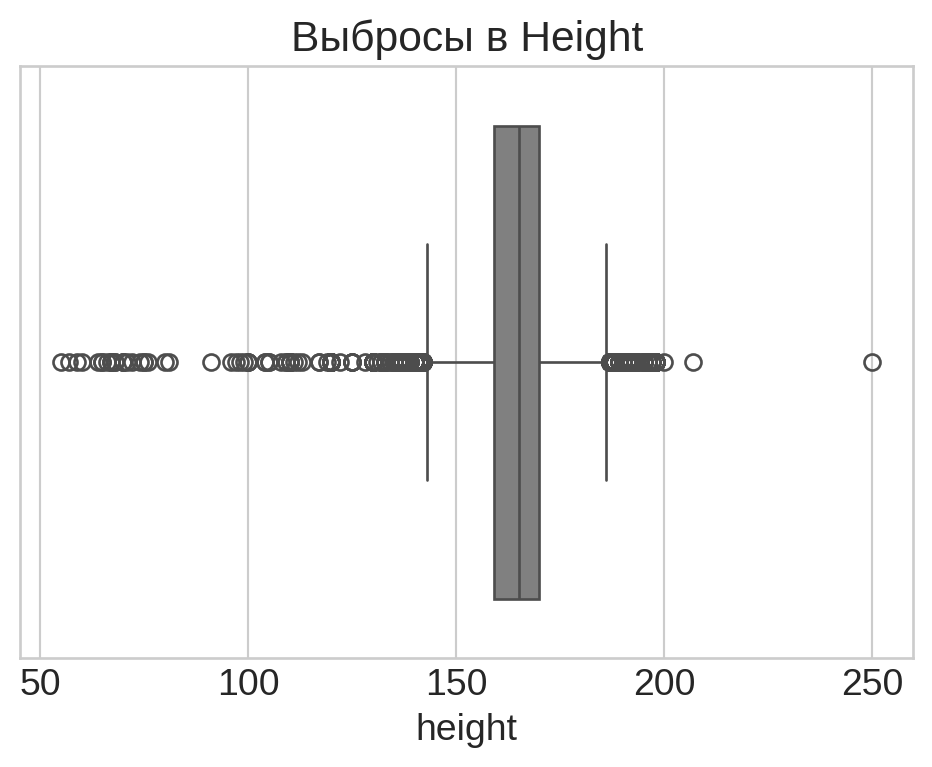
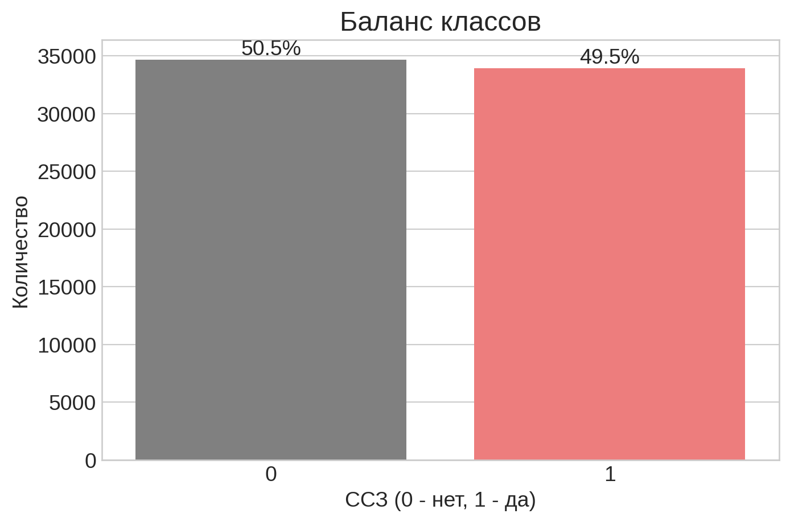
Вывод: Классы идеально сбалансированы (~50/50).
Это позволяет: 1. Использовать Accuracy как метрику. 2. Не применять методы оверсемплинга.
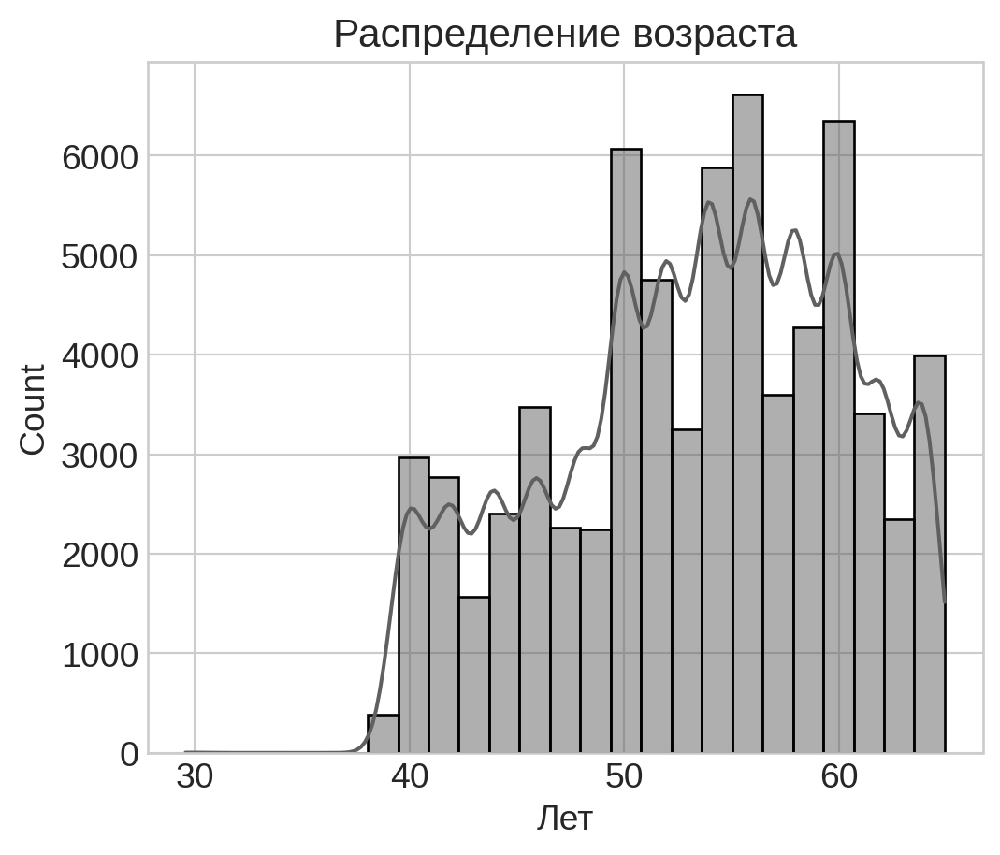
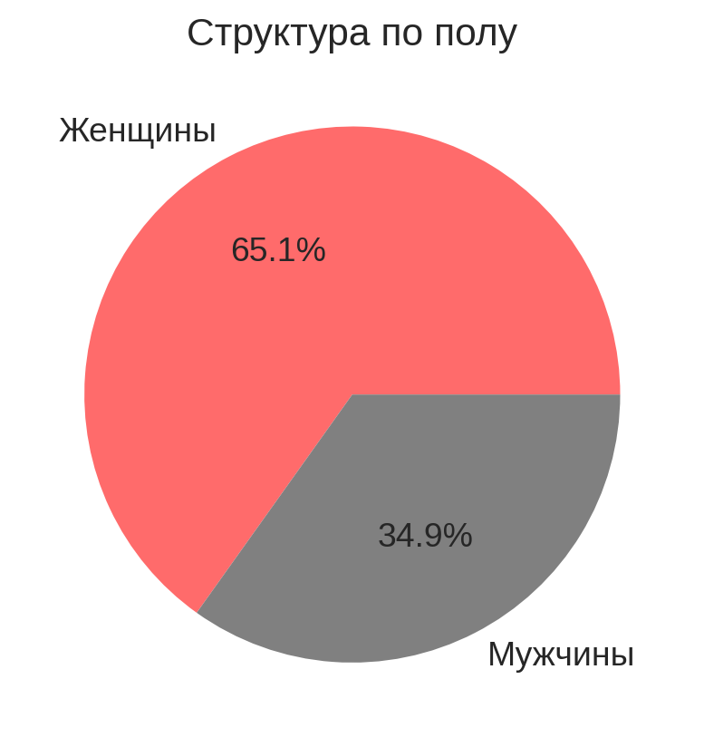
Индекс массы тела — один из ключевых индикаторов.
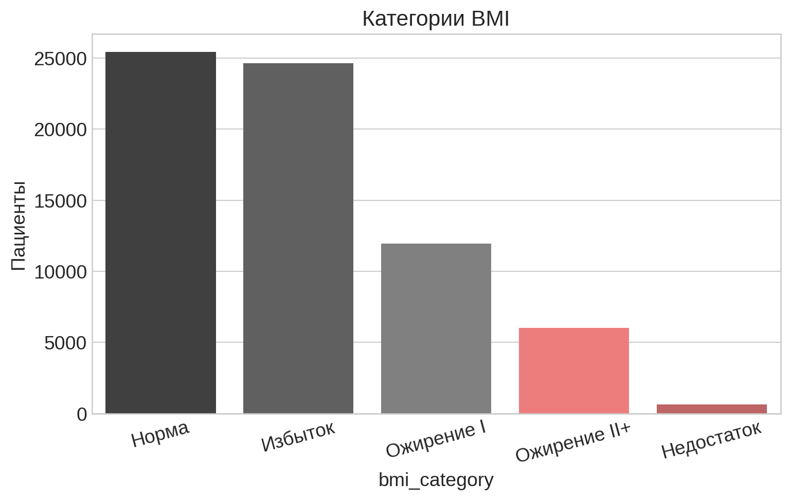
Наблюдение: Менее 40% пациентов имеют нормальный вес. Группы риска (избыточный вес + ожирение) составляют большинство.
Влияние вредных привычек и уровня метаболизма. - Холестерин: У 25% пациентов уровень выше нормы. - Активность: 80% заявляют о физической активности.
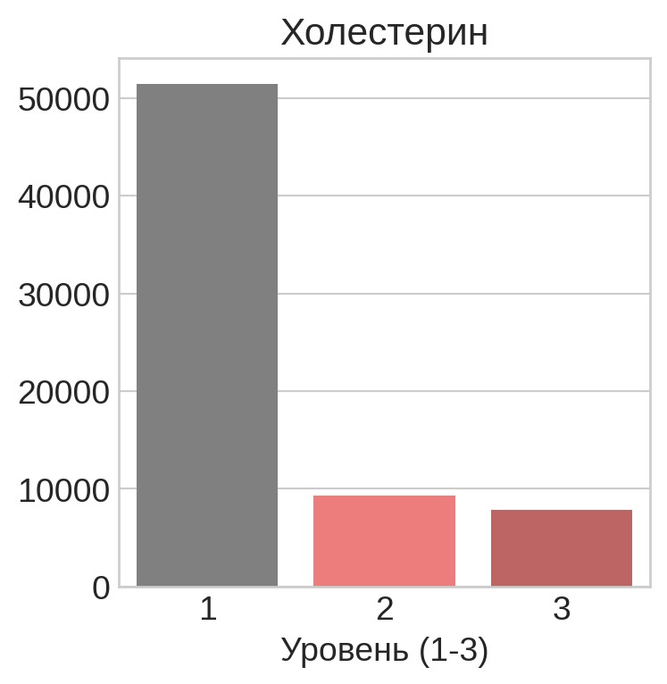
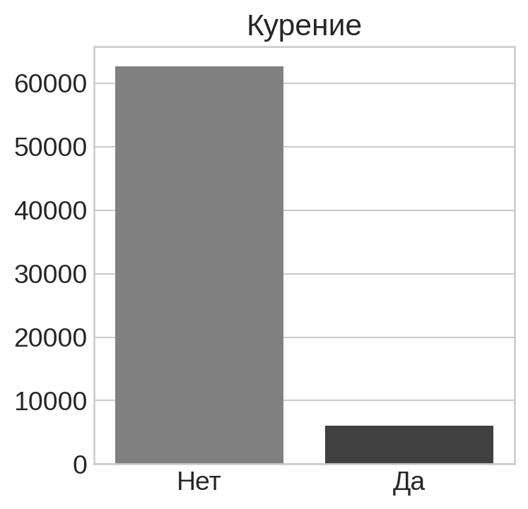
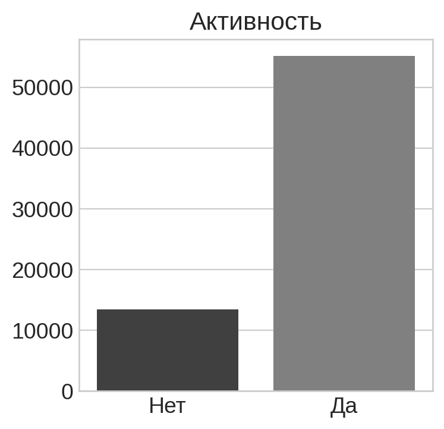
Какие факторы связаны сильнее всего?
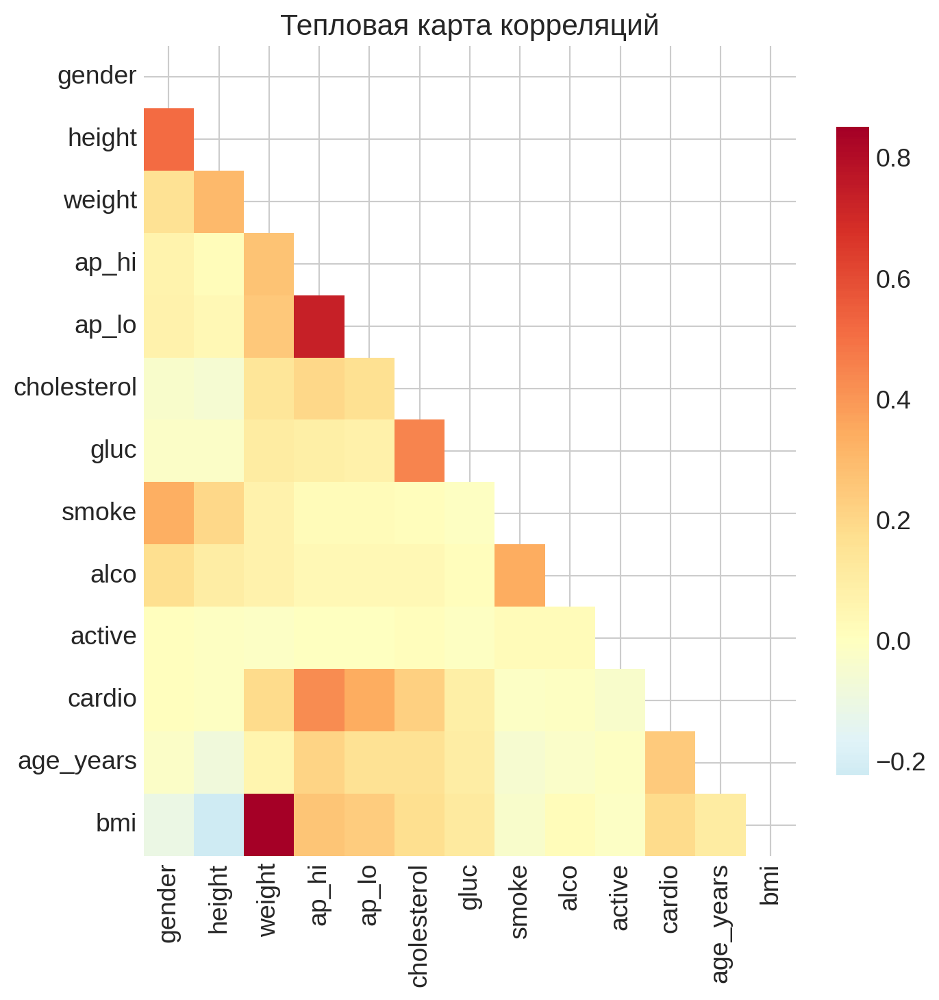
Ключевые связи:
Для прогнозирования были выбраны два алгоритма:
Процесс: - Разделение данных: 80% Train / 20% Test. - Stratified Split (сохранение баланса классов). - Стандартизация признаков (StandardScaler).
Сравнение точности (Accuracy) моделей на тестовой выборке.
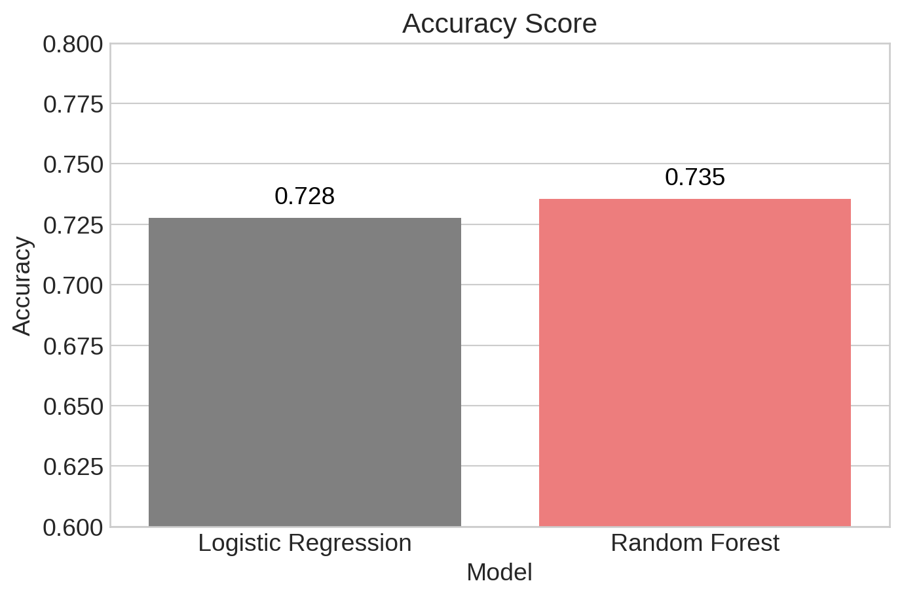
Random Forest показал лучший результат: ~73.6%
Это достаточный уровень для систем первичного скрининга и триажа пациентов.
Какие факторы модель Random Forest считает самыми важными?
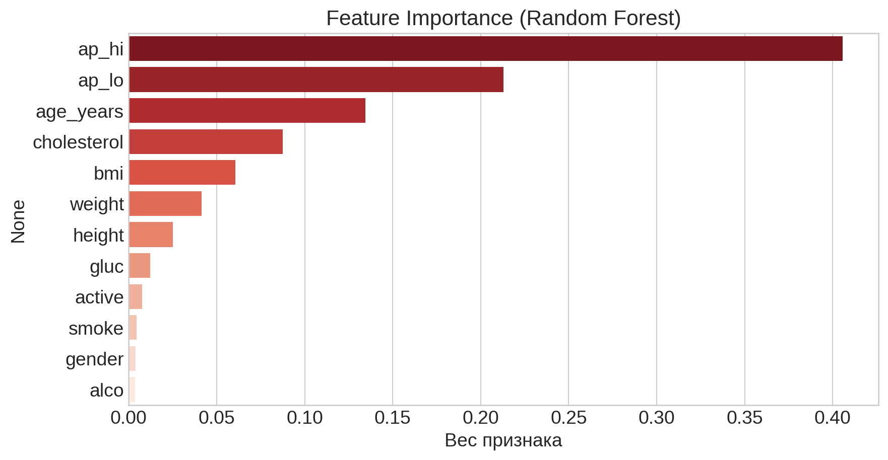
Спасибо за внимание!
Netology DSU-73